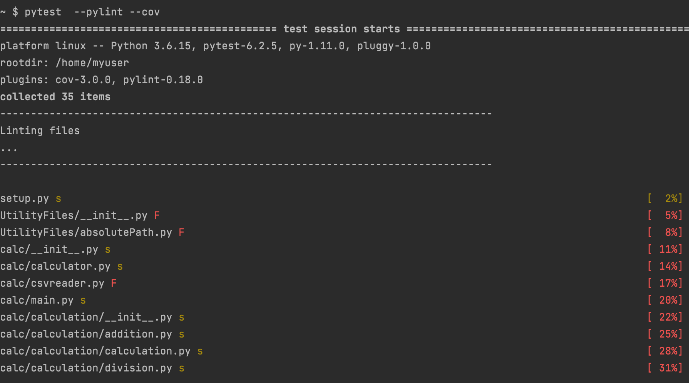

Pylint - Style Checking and Error Spotting
The Python community has defined certain recommended programming styles to assist everyone in writing code in a consistent, shared style that makes the most sense. PEP-8 is a style that captures this. Pylint is a simple and quick way to determine if your code has caught the essence of PEP-8 and is hence 'friendlier' to other possible users. Pylint can inform you where you've gone wrong and guide you in the right path for figuring out what you've done wrong and how to fix it.is an intelligent code analysis tool that understands your Python code. It catches common errors like misspelled variable names, to sneakier problems like non-returning branches. Running Pylint with no arguments will invoke the help dialogue and give you a idea of the arguments available to you. It also enforces a lot of best practices, such as keeping try ... except blocks focused on a few specific exception classes, and avoiding bad default arguments like empty lists or dictionaries. Pylint is unrivaled in strictness- it has a lot of checks for everything from superfluous warnings to serious errors. The downside to using Pylint is sometimes the check is just wrong; you'll want to keep your .pylintrc file close when you know you're right.
pip install pylint
pylint --generate-rcfile > .pylintrc
Like most Python tools, you can download Pylint from PyPi using pip. You might want to also create a .pylintrc file for your project. This file should be checked into source control, as well. Pylint can generate a default .pylintrc file. A common complaint when Pylint is initially run on a new piece of code is that it is too 'noisy.' All available warnings are enforced by default in the current configuration.
Tips:
- Many of Pylint’s commonly used command line options have shortcuts. for example, “–reports=n” can be abbreviated to “-rn”. Pylint’s man page lists all these shortcuts.
- There are fairly well defined conventions in PEP-8 around naming things like instance variables, functions, classes, etc. The conventions focus on the use of UPPERCASE and lowercase as well as the characters that separate multiple words in the name. This lends itself well to checking via a regular expression, thus the “should match (([A-Z_][A-Z1-9_]*)|(__.*__))$”.
- Pylint is fully customizable: modify your pylintrc to customize which errors or conventions are important to you.
Pylint - Errors:
Pylint has a significant number of checks it can perform. Many are disabled for the purposes of
Adafruit Learn guide code. The important checks for this guide are the ones Adafruit does not
disable. Pylint has a standard format to its output. When there is a syntax error, it will not
show a code rating. Depending on your version of Pylint, you may or may not see the first line
informing you what .pylintrc configuration file you're using.

For the program Calculator we could observe, below mentioned errors while running pylint.
=================================================== FAILURES ===================================================
______________________________________ [pylint] UtilityFiles/__init__.py _______________________________________
C: 1, 0: Module name "UtilityFiles" doesn't conform to snake_case naming style (invalid-name)
____________________________________ [pylint] UtilityFiles/absolutePath.py _____________________________________
C: 1, 0: Module name "absolutePath" doesn't conform to snake_case naming style (invalid-name)
C: 1, 0: Missing module docstring (missing-module-docstring)
__________________________________________ [pylint] calc/csvreader.py __________________________________________
C: 3, 0: Final newline missing (missing-final-newline)
C: 1, 0: Missing module docstring (missing-module-docstring)
============================= 3 failed, 14 passed, 18 skipped, 2 warnings in 1.40s =============================
The error lines are composed of the same four key parts:
1. The file name: UtilityFiles.py
2. The line containing the error: 1:
3. The details of the error: Module name "UtilityFiles" doesn't conform to snake_case naming style
4. The Pylint check name: (invalid-name)
Be aware that Pylint may not show you all the errors at once. It will cascade fail by returning one error
and then, once that error is resolved, returning another series of errors. This is why it's important to
run Pylint locally, otherwise you'll be waiting for the remote linter to run each time before you can
start working on the next set of errors. Once syntax errors have been resolved, your pylint tests will
be passed.